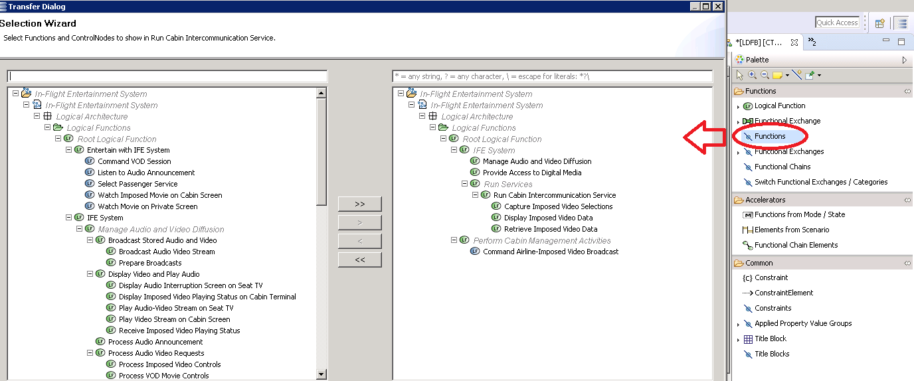
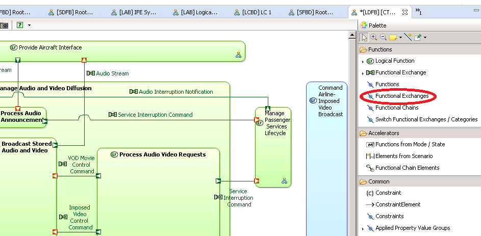

Methodology - Seamless Workflow between Functional Analysis and Interface Engineering

This quick tutorial shows one possible way from System Analysis to Physical Architecture, starting with Functional Analysis and
ending with Component Interfaces.
System Analysis
- Creation of System-level Functional Analysis
- Creation of a Component Exchange Scenario (CES)
Logical Architecture
- Transition to Logical Architecture
- Enrichment of the Functional Tree
- Allocation of Functions to Components
- Allocation of Exchange Items to Functional Exchanges
- Transition of CES from System Analysis
- Enrichment of Logical CES
Physical Architecture
- Transition from Logical Architecture
- Creation of a Physical Architecture diagram
- Generation of Component Exchanges, Physical Links, Interfaces
- Transition of CES from Logical Architecture
- Initialization of a Component Interface Scenario (CIS) from the CES
SYSTEM ANALYSIS
Once, Capella is open for the first step of this project:
- Select the System Analysis icon of the activity explorer


System Architecture diagram (SAB)
- Create a new System Architecture diagram.
- On the "Allocated System Function to System and Acors" expendbar of the activity explorer, select "Create a new System Architecture diagram".

Create Actors
- Select the "Actor" palette tool to add some Actors.

Note: On the IFE System, actors have been created and 2 are visible on the previous picture: Aircaft and Passenger
Allocate Functions to the Actors and System
- Select the "System Function" of the palette and click on Actors or System.

Note: On the IFE System, functions have been allocated to actors such as:
- Play sound in cabin to Aircraft
- Manage video and audio diffusion to IFE System
- Listen to audio Announcement to Passenger
Component Exchange Scenario (CES)
Create a new Component Exchange Scenario
- On the "Allocated System Function to System and Actors" expend-bar of the activity explorer, select "Create a new Exchange Scenario".

Add actors to the diagram
- Select the "Actors" of the palette(1) and click on diagram.
- Select the required actors(2) and click on OK(3).

- Select the "Functional Exchange" tool of the palette, select the source actor and the target actor.

- Click on the Source function selector button and select the desired function.

- Click on the Target Function selector button and select the desired function.

Note: When an exchange is already exists, the dialog allows to select it.
Note: On the IFE System, as shown in the following picture, the functional exchange "Audio Stream" has:
- "Send Audio announcement" as source function
- " Broadcast Audio Video Streams" as target function

Note: The System Architecture diagram is updated.
Note: Once a Functional Exchange has been put on the Scenario, it is not possible anymore to put Component Exchanges.

TRANSITIONS FROM SYSTEM ANALYSIS TO LOGICAL ARCHITECTURE
On Project Explorer: ,Right click on "System Analysis".
On the contextual menu, sub-menu "Transitions", select:
- "Actor"
- "Functional transition"


LOGICAL ARCHITECTURE
- Select the Logical Architecture icon of the activity explorer


Functional Breakdown diagram
Create a new Functional Breakdown diagram
- On the "Refine Logical Functions, describe functional Exchanges" expend-bar of the activity explorer, select "Create a new Functional Breakdown diagram".

Enrich Functional Tree
To refine a Function :
- Select the "Logical Function" palette tool to add function to the diagram

- Use the "Contained in" tool to create a refinement of function.

Note: On the IFE System, as shown in the previous picture, the function "Broadcast stored Audio and video" is refined by 2 logical functions: Prepare Broadcasts and Broadcast Audio Video stream.
Logical Architecture Diagram (LAB)
Create Logical Architecture diagram
- On the "Allocate Logical Functions to Logical Components" expend-bar of the activity explorer, select "Create a new Logical Architecture diagram".

Add Logical components
- Select the "Logical Components" tool of the palette and add it to the diagram.

Note: On the IFE System, as shown in the previous picture, logical componenets have been created such as Seat TV Interactions Manager, Seat TV Airline-Specific Interactions Manager or Seat TV Core Interactions Manager.
Manage Function Allocation
- Use the "Manage Function Allocation" Palette tool
- Select the target component. On the selection wizard, select the Source Function.


Note: ''On the IFE System, as shown in the previous picture, functions have been allocated to logical componenets such as:
- "Display Audio Interruption Screen on Seat TV" to the logical component "Seat TV Airline-Specific Interactions Manager"
- "Handle VOD Service Activation and Interruption" to the logical component "Seat TV Core Interactions Manager".
Class Diagram (CDB)
Create an Class Diagram
- On the "Transverse Modeling" expend-bar of the activity explorer, select "Create a new Class diagram".

Create Exchange Items
To create an Exchange Item, use the desired Item palette tool and add it to the Diagram. For example, you can create an event, an operation, a flow or a data.


Note: On the IFE System, as shown in the previous picture, a class diagram is set up.
Logical Dataflow Diagram
Create Logical Dataflow Diagram (LDFB)
- On the "Refine Logical Functions, describe functional Exchanges" expend-bar of the activity explorer, select "Create a new Functional Dataflow Blank diagram".

Show Functions
To show functions, use the "Functions" palette tool on the diagram and select the desired function.

Add a functional exchange
To add a functional exchange:
- Use the Functional Exchange palette tool and select the source and target function on the diagram

Assign Exchange Items to functional exchange
- Select a functional exchange on the diagram
- On the property view click on Exchange item button
- On the wizard select the desired exchange item

Note: On the IFE System, as shown in the previous picture, the exchanged Item "Audio-video Stream" is assigned to the functional exchange "Audio-video Stream".
Exchange Scenario (ES) Phase Transition System to Logical
To proceed to an Exchange Scenario transition:
- Right click on the scenario in the Project Explorer
- click on "Transitions" and select "System Exchange Scenario to Logical Exchange Scenario Initialization".

This transition gives the following result with the exchange scenario "Perform Audio Announcement" creates previously in the System analysis:

Note: The sequence messages originally related to the System element have been correctly dispatched between Logical Components.
Add a functional exchange
To add a functional exchange:
- Use the Functional Exchange palette tool and select the source and target function on the diagram

TRANSITION FROM LOGICAL ARCHITECTURE TO PHYSICAL ARCHITECTURE
On Project Explorer: ,Right click on "Logical Architecture".
On the contextual menu, sub-menu "Transitions", select:
- "Actor"
- "Functional transition"

To proceed to an Exchange Scenario transition from Logical architecture to Physical architecture:
- Right click on the scenario in the Project Explorer
- click on "Transitions" and select "Logical Exchange Scenario to Physical Exchange Scenario Initialization".

PHYSICAL ARCHITECTURE
- Select the Physical Architecture icon of the activity explorer


Physical Architecture Diagram (PAB)
Create a Physical Architecture diagram
- On the "Allocate Physical Functions to Physical Components" expend-bar of the activity explorer, select "Create a new Physcial Architecture diagram".

Create Node Physical Components
- Select the "Node PC" palette tool and add it to the diagram.

Note: On the IFE System, as shown in the previous picture, 5 Physical Nodes have been created to highlight : Private Video Display Unit, PVDU Processor, Video Server Unit, VSU Processor,Ethernet Switches.
Manage Deployment of Behavior Physical Components
- Use the "Manage Function allocation" of the palette on the desired node and select the desired Component on the wizard.


Note: On the IFE System, as shown in the previous picture:
- PTV Video Player(LC) and Unit Network Adapter - PVDU(LC) are allocated to PVDU Processor (PC)
- Streaming Server(LC) and Unit Network Adapter - VSU(LC) are allocated to VSU Processor (PC)
Show All Allocated Functions
- Use the "All Allocated Functions" palette tool on the diagram -> All the Allocated functions will automatically appear.

Generations
Generate Components Exchanges on Behaviour Components
To generate components exchange on behaviour components:
- Right click on a behaviour component
- Select "Modeling Accelerators"
- Select "Component Exchange" item of the contextual menu.

Generate Physical Links on Node Physical Components
To generate Physical Links on node components:
- Right click on a node component
- Select "Modeling Accelerators"
- Select "Physical Links" item of the contextual menu.

Generate Interfaces on Component Behavior
To generate Interfaces on Behavior Component:
- Right click on a behaviour component
- Select "Modeling Accelerators"
- Select "Interfaces from allocated functions" item of the contextual menu.

Interface Diagrams
Create Blank Interface Diagram (IDB)
To generate detail interfaces diagram:
- Right click on a component
- Select the "New -> Interfaces diagram blank" item of the contextual menu.

Insert existing Component
To insert existing components on the diagram:
- Use the "Components" palette tool on the diagram and select the desired component on the wizard.


Insert Existing Interfaces
To show Interfaces on the diagram:
- Use the "Interfaces" palette tool on the diagram and select the desired interface on the wizard.


Component Interface scenario (IS)
Initialize Interface Scenario (IS) from Exchange Scenario (ES) within the Logical Architecture
To proceed to ES to IS transition, within the Logical Analysis:
- Right click on the "Scenario" item of the Project Explorer
- On the contextual menu, sub-menu "Transition" select "Exchange scenario to Interface Scenario initialization"

To create an Interfaces Scenario:
- Right click on the "scenario (IS)" item of the Project Explorer
- On the contextual menu, sub-menu "New Diagram / Table" select " Interfaces Scenario".

Exchange Scenario (ES) Phase Transition Logical to Physical
To proceed to ES transition:
- Right click on the "Scenario" item of the Project Explorer
- On the contextual menu, sub-menu "Transition" select "Logical Architecture ES to Physical Architecture ES Initialization".

The result is a corresponding Scenario in the Physical Architecture.
InitialiZe Component Exchange Scenario (CES)
To create a diagram on the transited Exchanges Scenario:
- Right click on the scenario item of the Project Explorer
- On the contextual menu, sub-menu "New Diagram / Table" select " Exchanges Scenario".

Initialize Interface Scenario (IS) from Exchange Scenario (ES) within the Physical Architecture
To proceed to ES to IS transition, within the Physical Architecture:
- Right click on the "Scenario" item of the Project Explorer
- On the contextual menu, sub-menu "Transition" select "Exchange scenario to Interface Scenario initialization"

To create an Interfaces Scenario:
- Right click on the "scenario (IS)" item of the Project Explorer
- On the contextual menu, sub-menu "New Diagram / Table" select " Interfaces Scenario".